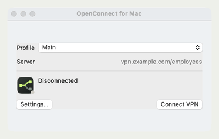

OpenConnect for Mac
Work VPN on your Mac
Connect to your organization’s AnyConnect-compatible VPN. Sign in with SSO, choose networks and DNS, and manage your connection from the menu bar.
macOS 14.4+ · access to an AnyConnect-compatible gateway

SSO: fill in multiple sign-in steps
Teach the web form once. Passwords and one-time codes come from Keychain, KeePassXC or your own command. Cisco single-sign-on-v2 uses a WebKit sign-in window.
Work networks through VPN; everything else uses your usual connection
Only the networks in your profile go through the tunnel; everything else, home network included, goes the usual way. Switch them from the menu without reconnecting.
Smart DNS: yours and the company’s at once
Company domains resolve through the company DNS, everything else through yours. Switch individual zones from the menu. System DNS stays untouched.
A native macOS menu with pause
Built with SwiftUI. Pause removes the app’s routes and DNS zones while keeping the VPN session; resume restores them. Profiles and logs open from the menu.
Survives sleep and network changes
The supervisor brings the connection back after sleep, Wi-Fi changes and dropped links, without opening a sign-in window on its own.
OpenConnect already has a graphical client: OpenConnect GUI. I build OpenConnect for Mac around my daily workflow: multi-step SSO in WebKit, individual route and DNS-zone switches, pausing without ending the session, and a ready-to-use profile from a teammate.
Install
/bin/bash -c "$(curl -fsSL https://raw.githubusercontent.com/ValeraGin/openconnect-for-mac/main/install.sh)"This command downloads the installer from GitHub. It offers to install missing Apple tools and Homebrew, installs OpenConnect for Mac and opens the app. The system helper needs your Mac administrator password.